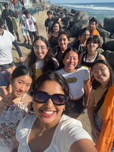
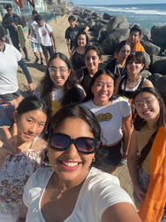

Nadia Colón
Hello my name is Nadia. I am a 4th year undergraduate Psychology Law and society major.I am a CHASS senator for ASUCR. I speak both Spanish and English, and I have experience working in outpatient clinics and clerical work. I enjoy working with others and collaborating as a team. My background includes expertise in publicity, healthcare, and public speaking. I am both a skilled writer and a highly sociable person. As a pre-Law student, I excel at relationship building and administrative tasks.During my time at ASUCR, I have worked as a senate intern and served as a member of the safety committee. Additionally, I held the position of vice chair of the campus safety alliance and I am currently serving as a CHASS senator.I was a Volunteer with experience helping patients and parents. I have First-rate communication and planning abilities with a resilient and hardworking nature. I am a bilingual individual with demonstrated leadership and strong staff oversight and development skills, in addition to grant writing and communication skills.I am enthusiastic, outgoing , and proficient at building positive relationships with new people. I was a focused Hospital Volunteer adept at providing first rate support to hospital administrative and healthcare staff. I offer strengths in problem solving, administrative support and multi-tasking.I have experience writing legislation and have a good understanding of Robert’s rules of order and ASUCR bylaws. I am a part of many committees. I am a part of the Legislative Review Committee where I oversee legislation and vote to approve and edit legislation before it reaches the senate. I am also a part of the Campus Safety Alliance Committee where last year I served as the Vice Chair of Campus Safety Alliance. Currently I have been a part of the safety committee for two years, and have helped to reinstate the Campus Safety Escort service. I am also an ex-officio member of the Executive Committee. I am also secretary of the UCR Star Wars club where I help with event planning and keep track of records. I work on lightsaber dueling and take notes every meeting. I was also a senate intern and shadowed an ASUCR senator last year. Last year I ran for elections and was selected by the study body to be a CHASS senator for our student government. I am a pre-law undergraduate student and my focus is toward the links between psychology and legal matters. I hope to specialize in either civil rights law or criminal law. Civil rights issues can also be related to a student’s right to an education no matter the person’s race and how plessy vs ferguson was ruled unconstitutional it is still practiced informally in classrooms. When Brown V. Board of education ruled it not only related to segregation it also spoke of the issues regarding students with disabilities and mental disorders. Brown v Board of education while ending segregation was not enforced and only related to students who were black and white and many years have passed since precedents for students of all races were considered.
Experience
CHASS Senator
• Wrote legislation such as initiative to install security cameras in parking lots
• Facillitated meetings and attended senate meetings
• Attended executive committee meetings as an ex-offico member
Senate Intern
• Tabeled bi-monthy
• Authored legislation to enact the proposal for clean and safe water for students (UCR Clean Water Project)
Volunteer Shriner's Hospital for Children
• Communicated with parents and patients who only spoke Spanish
• Assisted the nursing station with clerical wok
• Volunteered time in the Child Life and Recreational Therapy Department and with the outpatient clinic
• Worked about 25 hours a week and have amassed a total of 100 + hours
Education
UC Riverside
Portfolio



